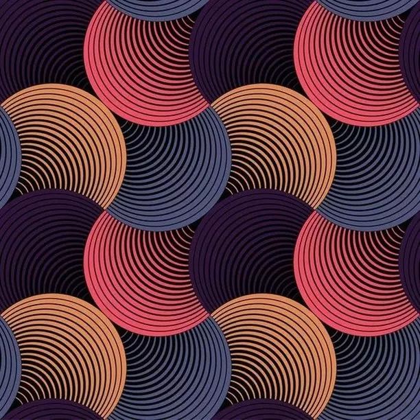

Здравствуйте! Меня зовут Алена, 3д визуализацией занимаюсь около года.
За это время я прошла курс художественной подготовки в школе АртФутуре в Санкт-Петербурге,
курс по моделированию в сертифицированном центре Autodesk по 3ds Max при университете ИТМО,
авторский курс по 3д визуализации у одного из самых талантливых 3д визуализаторов-Курилова Дмитрия.
Также за это время мною были выполнены несколько проектов. Проекты были придуманы мною от и до,
за исключением проекта кухни-гостиной, его я делала по референсу из интернета.
Работа над проектом заключалась в создании помещения, настройки освещения, подбору мебели и декора
из каталога, в том числе самостоятельное моделирование отдельных элементов, настройка материалов,
постановка ракурсов, визуализация и постобработка в Photoshop.
3д визуализация это то, что полностью увлекает меня, я прилагаю максимум сил для достижения
качественного результата, попутно учась новому. Для меня процесс создания 3д визуализации крайне
захватывающий процесс, от которого просто невозможно оторваться.
Для создания рендеров были использованы: 3Ds Max, Corona Renderer, Photoshop.